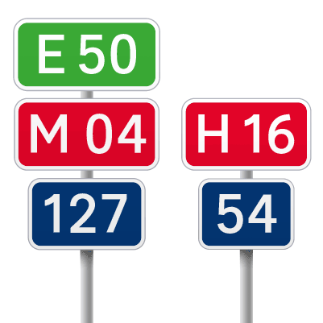

Спроби змінити підхід до навігації (маршрутного орієнтування) відбувалися здавна і неодноразово, але зміни до регуляторних документів — це процес, який тривав довше, ніж ініціатори перебували на посаді. Тому нікому це не було особливо цікавим.
Ми вирішили, вивчивши реальний користувацький досвід водіїв, на практиці відпрацювати наші рішення на кількох ділянках, оцінити їхню правильність та ефективність. Та вже на підставі готових об’єктів вносити зміни до стандартів, написати зрозуміле керівництво та впроваджувати нові навігаційні рішення по всій мережі доріг.
Першою обрали ділянку траси Н 01 від Городища до Сміли, яка зараз активно ремонтується і там можна швидко встановити знаки.
Ділянку траси у Черкаській області можна подивитись на інтерактивній мапі Укравтодору
Дисклеймер. Ми розробляємо рішення поступово для окремих ділянок доріг і будемо доповнювати після нових кейсів. У кінці проєкту зберемо все в єдиний документ.
Для побудови такої великої системи, як автомобільна навігація, потрібно визначити принципи, які допомагають впорядкувати всі рішення. Зараз ми виділили такі:
Виокремлюємо типові ділянки дороги та потреби на цих ділянках, щоб в однакових ситуаціях водієві допомагав однаковий набір знаків.
Використовуємо написання Title сase — великі літери використовують для початку повідомлення та початку кожного слова у власних назвах, інші літери рядкові. За дослідженнями відстань зчитування таких написів на 10% більша, ніж всіма прописними.
Написи всіма прописними має вигляд набору прямокутників і зливаються в суцільну кашу
За рахунок виносних елементів літер слова утворюють специфічні форми, які легше розпізнавати.
Title case також дозволяє при тому ж розмірі шрифту зменшити площу напису. Тоді можна збільшити розмір тексту при такій самій площі. А більший розмір — більша відстань зчитування.
Порівняння площ різних розмірів. Зверху вниз:
1) наявний шрифт ГОСТ, прописні літери, розмір літер 200 та 150 мм;
2) напис рядковоми літерами, той же розмір літер;
3) збільшений розмір шрифту — 224 та 160 мм;
4) збільшений розмір шрифту та розрядка літер 25% для кращої читабельності.
Порівняння площ різних розмірів.
Наявний шрифт ГОСТ, прописні літери, розмір літер 200 та 150 мм
Напис рядковоми літерами,
той же розмір літер
Збільшений розмір шрифту — 224 та 160 мм
Збільшений розмір шрифту та розрядка літер 25% для кращої читабельності
Наявний шрифт — прямий нащадок радянського шрифту ГОСТ 10807-78. Основний недолік — він був створений перш за все для написів прописними.
Новий шрифт — Road UA — напрацювання українського шрифтаря Андрія Константинова, засновника шрифтової студії minttype.com.
Road UA створювався як сучасний європейський шрифт, заснований на перевірених дослідженнями шрифтах — британському Transport та німецькому DIN,але із силуетами окремих символів більш подібних до наявного шрифту ГОСТ, щоб кардинально не ламати візуальну звичку.
Також у шрифту будуть різні накреслення: medium — для написів на темному тлі і bold — для написів на світлому, щоб написи на різному тлі оптично виглядали однаковими.
У новій навігації ми вирішили протестувати, як працюватиме новий шрифт. Про тестування напишемо окремо.
New Transport — оцифроване оновлення британського шрифту Transport.
Road UA Medium та Road UA Bold
Розмір тексту залежить від відстані, з якої треба читати напис, та часу на читання. А швидкість та час залежать від швидкості, з якою рухається водій. Тому ми розраховуємо, який розмір має бути на ділянках з різною швидкістю. Беремо досліджений індекс читабельності — 10 мм літери на кожні 4,8 м відстані.
Для консистентності розмірів прив’язуємось до висоти рядкової літери і встановлюємо крок змінення розміру — 40 мм. Від цих розмірів також побудуємо інші розміри та пропорції на знаку:
x-height = 4x
Висота рядкової літери
Наприклад,
x-height = 160 мм → x = 40 мм;
x-height = 120 мм → x = 30 мм.
Дослідження показують, що стрілки у формі шеврону краще видно у поганих умовах. Це можна імітувати за допомогою розмиття зображення.
Знизу більша кольорова пляма — краще зчитується форма стрілки.
Знизу більша кольорова пляма — краще зчитується форма стрілки.
Будова стрілки також прив’язана до розміру літер.
x = x-height / 4
Вводимо позначку центру міста . Таку позначку можна зустріти у різних країнах світу, наприклад, Італії, Катарі та інших.
На піктограми, що відображають рух, водії реагують швидше. Потяг «рухається на нас», а не стоїть на місці
Приклад з ПДР: знак 5.66. Залізничний вокзал
Піктограми, схожі на стрілки, повертаємо у напрямку руху.
Приклад з ПДР: літак вказує у сторону протилежну напрямку і це створює можливість для помилки водія.
Як пройти до аеропорту — стаття Юрія Грановського з детальним описом проблеми.
Згідно опитуванням багато водіїв орієнтуються саме за номерами трас. Практика кодування кольорами різних трас не нова. Але ми пропонуємо застосовувати колір по пріоритетах доріг:
Е 40 Європейський маршрут — зелений;
М 03 Міжнародна дорога — червоний;
Н 01 Національна — червоний;
Р 16 Регіональна — без кольору;
Т 14-02 Територіальна — без кольору.
Раніше регіональні Р і територіальні Т траси робили із жовтим тлом і чорним текстом. Але така яскравість більше привертала увагу, хоча пріоритет цих трас менший.
Приклад старого знаку. Траса Р 01 меншої категорії, але привертає увагу більше за рахунок жовтого кольору.
Окремо пропонуємо прибрати дефіси у номерах доріг і зробити їх ближче до європейських коридорів. Дефіси у номерах не несуть майже ніякої інформації, але додають шуму. А сам номер траси виділяється за рахунок білої рамки навколо номеру.
Дефіс можна залишити у номері територіальних доріг Т 14-16, де перші дві цифри означають номер області, а інші дві — номер дороги.
Багато інформації потребує багато часу на зчитування. Більше трьох напрямків складно сприймати, тому ми розносимо їх на окремі знаки.
Було: нагромадження тексту на одному носії.
Буде: розділення напрямків, до трьох на знак.
Міську навігацію (на білому тлі) та заміську (на синьому тлі) треба розділяти на різні носії для розділення контексту.
Розділення тільки кольором тла. Потрібен час на відокремлення міської та заміської інформації.
Під час створення адресних покажчиків ми шукали транслітерацію, яка найкраще вирішувала б задачу передачі звучання назви. Від офіційної паспортної транслітерації відрізняється спрощеною літерою «щ» — «sch», а також усуненим дублюванням у «iie» та «iia», а «ьо» транслітерується як «io».
| А | a | Ї | i, yi * | Ф | f |
| Б | b | Й | i, y * | Х | kh |
| В | v | К | k | Ц | ts |
| Г | h, gh ** | Л | l | Ч | ch |
| Ґ | g | М | m | Ш | sh |
| Д | d | Н | n | Щ | sch |
| Е | e | О | o | Ь | не транслітерується |
| Є | ie, ye * | П | p | Ю | iu, yu * |
| Ж | zh | Р | r | Я | ia, ya * |
| З | z | С | s | ’ | не транслітерується |
| И | y | Т | t | ||
| І | i | У | u |
Vulytsia vs Street — навіщо потрібна транслітерація
translit.a3.kyiv.ua — онлайновий інструмент для транслітерації.
Для з’їздів на розв’язках пропонуємо застосовувати знак зі зрізаним краєм, він своєю формою підсилює сприйняття напрямку в бік.
З’їзд підкреслений формою знаку — скосом під 70˚. Помітний ще до того, як видно написи та стрілку
Знаки сервісів мають допомагати з розумінням дороги.
Зараз знаки згідно правил розміщують перед самою АЗС. Але в цьому мало сенсу, зазвичай АЗС видно заздалегідь завдяки стелам чи екранам. Корисніше ставити знаки АЗС після заправки і відповідати на питання «Коли буде наступна АЗС?». Так водій може вирішити чи потрібно йому повернутись та заправитись, чи можна їхати далі.
На в’їзді у місто корисно дати розуміння, чи є тут екстрені служби (лікарня, поліція), скільки до них їхати і куди. У межах міста доречно на шляху до служб встановлювати знаки для підтвердження напрямку.
На знаках підтвердження напрямку вводимо пріоритети: зверху великий номер траси, якою ми зараз прямуємо якщо в тому ж напрямку є важливе місто, але щоб дістатись до нього треба з’їхати на іншу трасу, додаємо лінію-розділювач, а номер траси ставимо після назви.
Прямуємо трасою Н 01, а до Черкас потрібно буде з’їхати на Н 16.
Прямуємо трасою Н 01
Наступний населений пункт
Термінальний населений пункт (кінцевий на цій трасі)
Черкаси в тому ж напрямку, але потрібно буде з’їхати на Н 16
Для спрощення орієнтування у схемах пропонуємо виділяти товщиною та розміром стрілок головний напрямок. У пріоритеті — траса, якою ми прямуємо. Таке виділення має не протирічити знакам пріоритету проїзду перехрестя.
Часто знаки встановлюють безпосередньо в точках повороту. Але знак потрібно ставити заздалегідь, щоб водій міг зорієнтуватись і за необхідності здійснити маневр. Ця відстань може залежати від швидкості руху на ділянці.
| Обмеження швидкості | Відстань від знаку до точки, м | Відстань між знаками, м | ||
|---|---|---|---|---|
Потребує зупинки |
Потребує суттєвого зменшення швидкості |
Не потребує суттєвого зменшення швидкості |
||
| 50 км/год | 50–80 | 35–60 | 30–45 | 40 |
| 90 км/год | 140–180 | 90–120 | 60–80 | 60 |
| 110 км/год | 220–250 | 150–180 | 100–120 | 80 |
Якщо ми розуміємо, що авто на ділянці не може рухатись з такою швидкістю (наприклад, між маневрами), слід відштовхуватись від прогнозованої швидкості, а не від обмеження.
| Обмеження швидкості | Відстань від знаку до точки |
|---|---|
| 50 км/год | 170 м |
| 90 км/год | 300 м |
| 110 км/год | 350 м |
Для консистентності та зменшення хаосу на кожному знаку використовуються лише два розміри тексту. Зазвичай більший розмір для українського і менший — для трансліту. Номери трас також приймають або більший розмір, або менший.
Розміри і пропорції всіх елементів прив’язано до висоти рядкової літери українського тексту — x-height = 4x. А від цього модулю x вже будуються всі розміри та пропорції.
Окрім модульної сітки для кращої естетики і покращення сприйняття створюємо лінію читання «Назва—Відстань—Напрям». Об’єкти на одній лінії простіше співвідносити між собою.
Іноді зустрічаються знаки, які ніяк не регламентовані. Наприклад, знак біля вузьких мостів. Зараз він схожий на назву міста, хоча вони різні. Спочатку уніфікуємо знак з написом, потім вводимо новий стандартний знак у ПДР.
На першому етапі комбінуємо знак, потім вводимо новий.
Попереджуючі знаки зараз схожі на початок населеного пункту
Знаки річок відокремлюємо від іншої навігації за рахунок блакитного кольору та позначення хвиль для створення приємного нюансу.
Блакитний колір і графіка відокремлять річки від знаків напрямку і назв міст.
Зараз знаки річок схожі на напрямки та назви міст.
Дорога має надавати більше інформації для ухвалення рішення і адекватної реакції, ніж теоретично мінімально необхідно.
Не варто сподіватись, що 100% водіїв побачать та зрозуміють 100% сигналів від дороги. Якщо ми надаємо лише необхідний мінімум інформації, абсолютно точно якась кількість водіїв не побачить та не зреагує на якусь кількість сигналів, а отже «правила поведінки» у якійсь кількості ситуацій будуть незрозумілими.
Яскравим прикладом є початок населеного пункту, що означає для водія зміну швидкісного режиму до 50 км/год. Водій отримує лише один сигнал про обмеження швидкості — знак початку населеного пункту. І ми точно розуміємо, що якась кількість водіїв не побачить, не розпізнає, не зрозуміє цей знак, а отже і не відреагує адекватно йому. За принципом надлишкової інформації ми маємо надати йому додаткові сигнали про обмеження швидкості. Найбільш зрозумілим буде знак обмеження швидкості.

Водієві завжди потрібно підтвердження, якою трасою він рухається і чи не з’їхав не туди. Здається, для цього можна використати кілометрові стовпчики, які і так встановлюються. На них можна додати номер траси. Для заощадження можна встановлювати номер на кожному п’ятому стовпчику.
У місцях, де потрібно приймати рішення про подальший напрямок (складні перехрестя, розв’язки, перехрестя у містах, де проходить траса) потрібно підтверджувати правильність обраного шляху. Для цього ставимо знак і дублюємо розміткою номер траси, якою ми їдемо.
Після перехрестя підтверджуємо трасу за допомогою знака та розмітки.
Наполегливо нагадуємо про обмеження швидкості впродовж траси.
На з’їздах з однієї траси на іншу дублюємо номери розміткою. Номер траси на розмітці робимо з рамкою Н 16, як на знаках, для консистентності.
Знак обмеження швидкості 70 км/год перед населеним пунктом дозволить зреагувати та скинути швидкість перед самим містом.
Знак 5.45. В’їзд до населеного пункта.
Знак 5.46. Виїзд з населеного пункту.
Знак підтвердження напрямку з відстанями до населених пунктів.
Схема розв’язки. Підчас роботи над схемами, з’явились додаткові принципи конструювання схем. Наприклад, розміщувати текст так, щоб він допомагав сприймати напрямок руху: з’їзд праворуч → текст праворуч.
Схема перехрестя.
Було: у такій конфігурації Центр та Київ неявно відносяться до своїх напрямків; а маневр, який потрібно здійснити на розв’язці замілкий і його складно виокремити.
Буде: різні напрямки по різних кутах знаку, стрілки явно біля назв.
На перетині трас Н 01 та Н 16 замість малого знаку на землі краще винести знаки на опору над дорогою.
Складне перехрестя у Городищі.
Перетин Н 01 та Т 24-01 у Городищі.
Перетин трас Н 01 та Н 16.

Поки це перші рішення, не всі проблеми до кінця вирішено, і ми будемо раді зворотньому зв’язку стосовно них.
На одному знаку вказуємо до трьох населених пунктів:
Якщо на знаку вказується лише дві дестинації в одному напрямку, то варто вказати найбільш значущий населений пункт на маршруті та термінальний населений пункт.